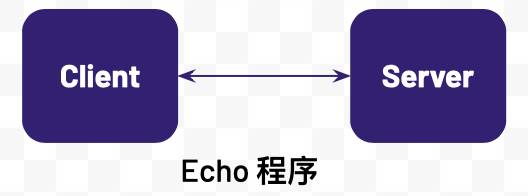
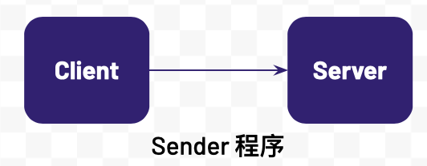
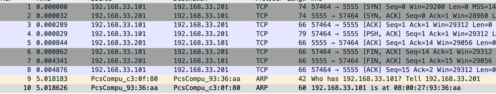
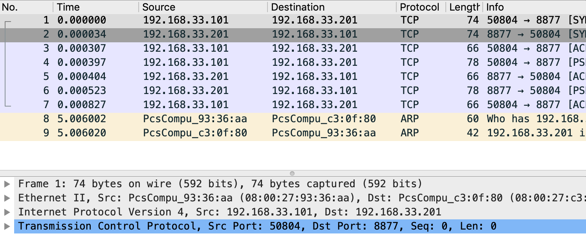

sudo yum install net-tools
sudo yum install tcpdump
sudo yum install wireshark-gnome
sudo yum install java-1.8.0-openjdk-develTCP 调试
Table of Contents
说明
本部分通过客户端/服务器端 Echo 小程序和 TCP 抓包和分析工具进行 TCP Debug，目的是理解
-
TCP 三次握手
-
二层 Ethernet 帧结构
-
三层 IP 报文结构
-
四层 TCP 段的结构
环境准备
相关包安装
在客户端服务器和服务器端服务器上均安装一下包：
Echo 程序
Echo 程序是 C 客户端和服务器端通信程序，连接建立后，客户端可发送文本到服务器端，服务器端接收到文本后打印输出并将接收到的文本反发回给客户端。客户端和服务器端程序逻辑如下

-
服务器端监听到一个端口，等待客户端连接
-
客户端建立一个和服务器端的连接
-
客户端发送一个消息到服务器端
-
服务器端接收到客户端发来的消息，打印输出，并将原消息返回给客户端
-
客户端接收到服务器端返回的消息，打印输出
-
客户端关闭和服务器端的连接
-
服务器继续等待下一个客户端的连接
运行步骤
// 编译运行服务器端（需要安装 gcc）
gcc server.c -o server
./server
//编译运行客户端（需要安装 gc，修改代码中 IP 地址为服务器 IP）
gcc client.c -o client
./clientSender 程序
Sender 程序是 Java 客户端和服务器端通信程序，连接建立后，客户端可发送文本到服务器端，并且可以指定发送的文本的大小。客户端和服务器端程序逻辑如下：

-
服务器端监听到一个端口，等待客户端连接
-
客户端建立一个和服务器端的连接
-
客户端发送一个消息到服务器端
-
服务器端接收客户端发送的消息并输出
-
客户端关闭和服务器端的连接
-
服务器端关闭服务器端 Socket
参照附件 Client.java 和 Server.java 获取相关程序代码。
运行步骤
// 编译运行服务器端（java 开发环境需安装，修改代码中 IP 地址为服务器 IP）
javac Server.java
java Server
//编译运行客户端（java 开发环境需安装，修改代码中 IP 地址为服务器 IP）
javac Client.java
java Client 1024TCP 调试
Sender 程序运行抓包分析
1. 服务器端运行 tcpdump
sudo tcpdump -nn -vvv -s 0 -i eth1 -w tcpserver.cap host 192.168.33.1012. 客户端运行 tcpdump
sudo tcpdump -nn -vvv -s 0 -i eth1 -w tcpclient.cap host 192.168.33.2013. 启动 server
javac Server.java
java Server4. 启动 client
javac Client.java
java Client5. 查看 tcpserver.cap
$ tcpdump -r tcpserver.cap
reading from file tcpserver.cap, link-type EN10MB (Ethernet)
12:17:52.687814 IP 192.168.33.101.57464 > server.example.com.personal-agent: Flags [S], seq 3621100753, win 29200, options [mss 1460,sackOK,TS val 21057940 ecr 0,nop,wscale 7], length 0
12:17:52.687846 IP server.example.com.personal-agent > 192.168.33.101.57464: Flags [S.], seq 3295967793, ack 3621100754, win 28960, options [mss 1460,sackOK,TS val 11290008 ecr 21057940,nop,wscale 7], length 0
12:17:52.688103 IP 192.168.33.101.57464 > server.example.com.personal-agent: Flags [.], ack 1, win 229, options [nop,nop,TS val 21057940 ecr 11290008], length 0
12:17:52.688643 IP 192.168.33.101.57464 > server.example.com.personal-agent: Flags [P.], seq 1:14, ack 1, win 229, options [nop,nop,TS val 21057940 ecr 11290008], length 13
12:17:52.688658 IP server.example.com.personal-agent > 192.168.33.101.57464: Flags [.], ack 14, win 227, options [nop,nop,TS val 11290009 ecr 21057940], length 0
12:17:52.688676 IP 192.168.33.101.57464 > server.example.com.personal-agent: Flags [F.], seq 14, ack 1, win 229, options [nop,nop,TS val 21057941 ecr 11290008], length 0
12:17:52.692155 IP server.example.com.personal-agent > 192.168.33.101.57464: Flags [F.], seq 1, ack 15, win 227, options [nop,nop,TS val 11290012 ecr 21057941], length 0
12:17:52.692690 IP 192.168.33.101.57464 > server.example.com.personal-agent: Flags [.], ack 2, win 229, options [nop,nop,TS val 21057945 ecr 11290012], length 06. 查看 tcpclient.cap
$ tcpdump -r tcpclient.cap
reading from file tcpclient.cap, link-type EN10MB (Ethernet)
12:17:52.679155 IP client.example.com.57464 > server.example.com.personal-agent: Flags [S], seq 3621100753, win 29200, options [mss 1460,sackOK,TS val 21057940 ecr 0,nop,wscale 7], length 0
12:17:52.679512 IP server.example.com.personal-agent > client.example.com.57464: Flags [S.], seq 3295967793, ack 3621100754, win 28960, options [mss 1460,sackOK,TS val 11290008 ecr 21057940,nop,wscale 7], length 0
12:17:52.679530 IP client.example.com.57464 > server.example.com.personal-agent: Flags [.], ack 1, win 229, options [nop,nop,TS val 21057940 ecr 11290008], length 0
12:17:52.680008 IP client.example.com.57464 > server.example.com.personal-agent: Flags [P.], seq 1:14, ack 1, win 229, options [nop,nop,TS val 21057940 ecr 11290008], length 13
12:17:52.680170 IP client.example.com.57464 > server.example.com.personal-agent: Flags [F.], seq 14, ack 1, win 229, options [nop,nop,TS val 21057941 ecr 11290008], length 0
12:17:52.680310 IP server.example.com.personal-agent > client.example.com.57464: Flags [.], ack 14, win 227, options [nop,nop,TS val 11290009 ecr 21057940], length 0
12:17:52.683942 IP server.example.com.personal-agent > client.example.com.57464: Flags [F.], seq 1, ack 15, win 227, options [nop,nop,TS val 11290012 ecr 21057941], length 0
12:17:52.683984 IP client.example.com.57464 > server.example.com.personal-agent: Flags [.], ack 2, win 229, options [nop,nop,TS val 21057945 ecr 11290012], length 07. wireshark 图形化分析
wireshark 打开上面步骤收集到的 tcpdump 文件如下图

Echo 程序运行抓包分析
1. 服务器端运行 tcpdump
sudo tcpdump -nn -vvv -s 0 -i eth1 -w server.cap host 192.168.33.1012. 客户端运行 tcpdump
sudo tcpdump -nn -vvv -s 0 -i eth1 -w client.cap host 192.168.33.2013. 启动 server
./server4. 启动 client
./client5. 查看 server.cap
$ tcpdump -r server.cap
reading from file server.cap, link-type EN10MB (Ethernet)
09:41:00.217116 IP 192.168.33.101.50802 > server.example.com.8877: Flags [S], seq 769172041, win 29200, options [mss 1460,sackOK,TS val 6053534 ecr 0,nop,wscale 7], length 0
09:41:00.217163 IP server.example.com.8877 > 192.168.33.101.50802: Flags [S.], seq 1869852269, ack 769172042, win 28960, options [mss 1460,sackOK,TS val 4896078 ecr 6053534,nop,wscale 7], length 0
09:41:00.217543 IP 192.168.33.101.50802 > server.example.com.8877: Flags [.], ack 1, win 229, options [nop,nop,TS val 6053534 ecr 4896078], length 0
09:41:00.217822 IP 192.168.33.101.50802 > server.example.com.8877: Flags [P.], seq 1:13, ack 1, win 229, options [nop,nop,TS val 6053535 ecr 4896078], length 12
09:41:00.217903 IP server.example.com.8877 > 192.168.33.101.50802: Flags [.], ack 13, win 227, options [nop,nop,TS val 4896079 ecr 6053535], length 0
09:41:00.218018 IP server.example.com.8877 > 192.168.33.101.50802: Flags [P.], seq 1:13, ack 13, win 227, options [nop,nop,TS val 4896079 ecr 6053535], length 12
09:41:00.218369 IP 192.168.33.101.50802 > server.example.com.8877: Flags [.], ack 13, win 229, options [nop,nop,TS val 6053535 ecr 4896079], length 06. 查看 client.cap
$ tcpdump -r client.cap
reading from file client.cap, link-type EN10MB (Ethernet)
09:41:00.177676 IP client.example.com.50802 > server.example.com.8877: Flags [S], seq 769172041, win 29200, options [mss 1460,sackOK,TS val 6053534 ecr 0,nop,wscale 7], length 0
09:41:00.178159 IP server.example.com.8877 > client.example.com.50802: Flags [S.], seq 1869852269, ack 769172042, win 28960, options [mss 1460,sackOK,TS val 4896078 ecr 6053534,nop,wscale 7], length 0
09:41:00.178182 IP client.example.com.50802 > server.example.com.8877: Flags [.], ack 1, win 229, options [nop,nop,TS val 6053534 ecr 4896078], length 0
09:41:00.178468 IP client.example.com.50802 > server.example.com.8877: Flags [P.], seq 1:13, ack 1, win 229, options [nop,nop,TS val 6053535 ecr 4896078], length 12
09:41:00.178842 IP server.example.com.8877 > client.example.com.50802: Flags [.], ack 13, win 227, options [nop,nop,TS val 4896079 ecr 6053535], length 0
09:41:00.178936 IP server.example.com.8877 > client.example.com.50802: Flags [P.], seq 1:13, ack 13, win 227, options [nop,nop,TS val 4896079 ecr 6053535], length 12
09:41:00.178981 IP client.example.com.50802 > server.example.com.8877: Flags [.], ack 13, win 229, options [nop,nop,TS val 6053535 ecr 4896079], length 07. wireshark 图形化分析
wireshark 打开上面步骤收集到的 tcpdump 文件如下图

接下来我们一次分析不同网络通信层的帧、包等详细结构。
TODO
附件
client.c
#include <arpa/inet.h>
#include <stdio.h>
#include <string.h>
#include <sys/socket.h>
#include <unistd.h>
int main() {
printf("echo client\n");
const char* server_name = "192.168.33.201";
const int server_port = 8877;
struct sockaddr_in server_address;
memset(&server_address, 0, sizeof(server_address));
server_address.sin_family = AF_INET;
// creates binary representation of server name
// and stores it as sin_addr
// http://beej.us/guide/bgnet/output/html/multipage/inet_ntopman.html
inet_pton(AF_INET, server_name, &server_address.sin_addr);
// htons: port in network order format
server_address.sin_port = htons(server_port);
// open a stream socket
int sock;
if ((sock = socket(PF_INET, SOCK_STREAM, 0)) < 0) {
printf("could not create socket\n");
return 1;
}
// TCP is connection oriented, a reliable connection
// **must** be established before any data is exchanged
if (connect(sock, (struct sockaddr*)&server_address, sizeof(server_address)) < 0) {
printf("could not connect to server\n");
return 1;
}
// send
// data that will be sent to the server
const char* data_to_send = "Hello World!";
send(sock, data_to_send, strlen(data_to_send), 0);
// receive
int n = 0;
int len = 0, maxlen = 100;
char buffer[maxlen];
char* pbuffer = buffer;
// will remain open until the server terminates the connection
while ((n = recv(sock, pbuffer, maxlen, 0)) > 0) {
pbuffer += n;
maxlen -= n;
len += n;
buffer[len] = '\0';
printf("received: '%s'\n", buffer);
break;
}
// close socket
close(sock);
return 0;
}server.c
#include <arpa/inet.h>
#include <netinet/in.h>
#include <stdbool.h>
#include <stdio.h>
#include <string.h>
#include <unistd.h>
/**
* TCP Uses 2 types of sockets, the connection socket and the listen socket.
* The Goal is to separate the connection phase from the data exchange phase.
**/
int main(int argc, char *argv[]) {
printf("echo server\n");
// port to start the server on
int SERVER_PORT = 8877;
// socket address used for the server
struct sockaddr_in server_address;
memset(&server_address, 0, sizeof(server_address));
server_address.sin_family = AF_INET;
// htons: host to network short: transforms a value in host byte
// ordering format to a short value in network byte ordering format
server_address.sin_port = htons(SERVER_PORT);
// htonl: host to network long: same as htons but to long
server_address.sin_addr.s_addr = htonl(INADDR_ANY);
// create a TCP socket, creation returns -1 on failure
int listen_sock;
if ((listen_sock = socket(PF_INET, SOCK_STREAM, 0)) < 0) {
printf("could not create listen socket\n");
return 1;
}
// bind it to listen to the incoming connections on the created server
// address, will return -1 on error
if ((bind(listen_sock, (struct sockaddr *)&server_address, sizeof(server_address))) < 0) {
printf("could not bind socket\n");
return 1;
}
// maximum number of waiting clients, after which
// dropping begins
int wait_size = 16;
if (listen(listen_sock, wait_size) < 0) {
printf("could not open socket for listening\n");
return 1;
}
// socket address used to store client address
struct sockaddr_in client_address;
int client_address_len = 0;
// run indefinitely
while (true) {
// open a new socket to transmit data per connection
int sock;
if ((sock = accept(listen_sock, (struct sockaddr *)&client_address, &client_address_len)) < 0) {
printf("could not open a socket to accept data\n");
return 1;
}
int n = 0;
int len = 0, maxlen = 100;
char buffer[maxlen];
char *pbuffer = buffer;
printf("client connected with ip address: %s\n", inet_ntoa(client_address.sin_addr));
//keep running as long as the client keeps the connection open
while ((n = recv(sock, pbuffer, maxlen, 0)) > 0) {
pbuffer += n;
maxlen -= n;
len += n;
printf("received: '%s'\n", buffer);
// echo received content back
send(sock, buffer, len, 0);
}
close(sock);
}
close(listen_sock);
return 0;
}Server.java
Server.java
import java.io.* ;
import java.net.*;
public class Server {
public static void main(String[] args) throws IOException, InterruptedException {
System.out.println("server");
InetAddress addr = InetAddress.getByName("192.168.33.201");
ServerSocket serversocket = new ServerSocket(5555, 50, addr);
Socket socket = serversocket.accept();
System.out.println("received client, " + socket.getInetAddress());
DataInputStream dis = new DataInputStream(socket.getInputStream());
String str = (String)dis.readUTF();
System.out.println("message= " + str);
serversocket.close();
}
}Client.java
Client.java
import java.io.* ;
import java.net.*;
import java.util.UUID;
public class Client {
public static void main(String[] args) throws UnknownHostException, IOException, InterruptedException {
String msg = "Hello World";
if(args.length > 0) {
Integer len = Integer.parseInt(args[0]);
System.out.println(len);
msg = genrate(len);
}
System.out.println("client");
Socket socketClient = new Socket("192.168.33.201",5555);
DataOutputStream dout = new DataOutputStream(socketClient.getOutputStream());
dout.writeUTF(msg);
dout.flush();
dout.close();
System.out.println("send message to server");
socketClient.close();
}
private static String genrate(int len) {
char[] array = new char[len];
int pos = 0;
while (pos < len) {
array[pos] = UUID.randomUUID().toString().charAt(1);
pos++;
}
return new String(array);
}
}